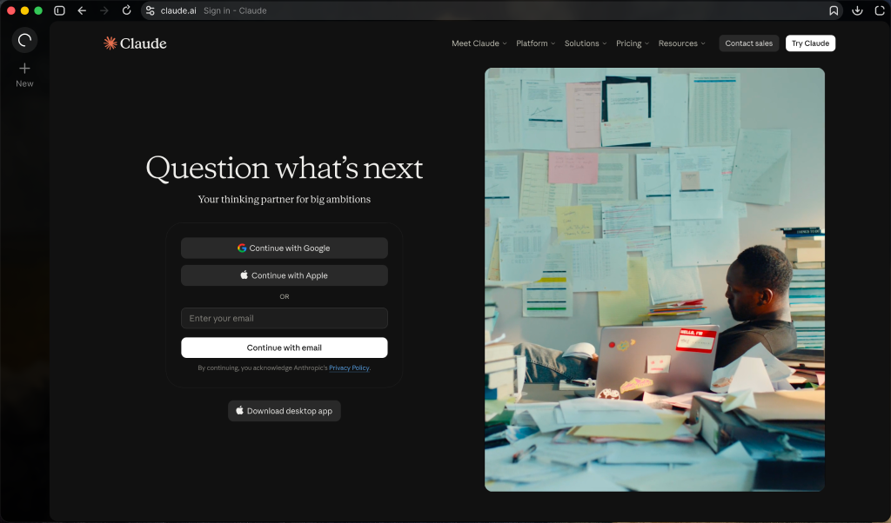
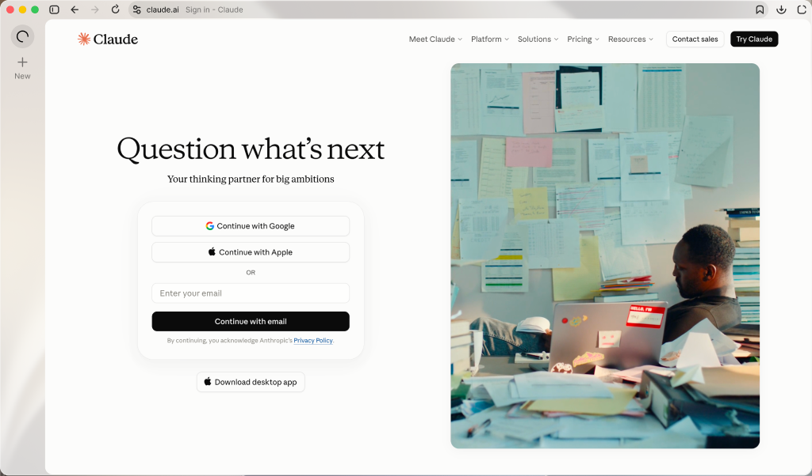
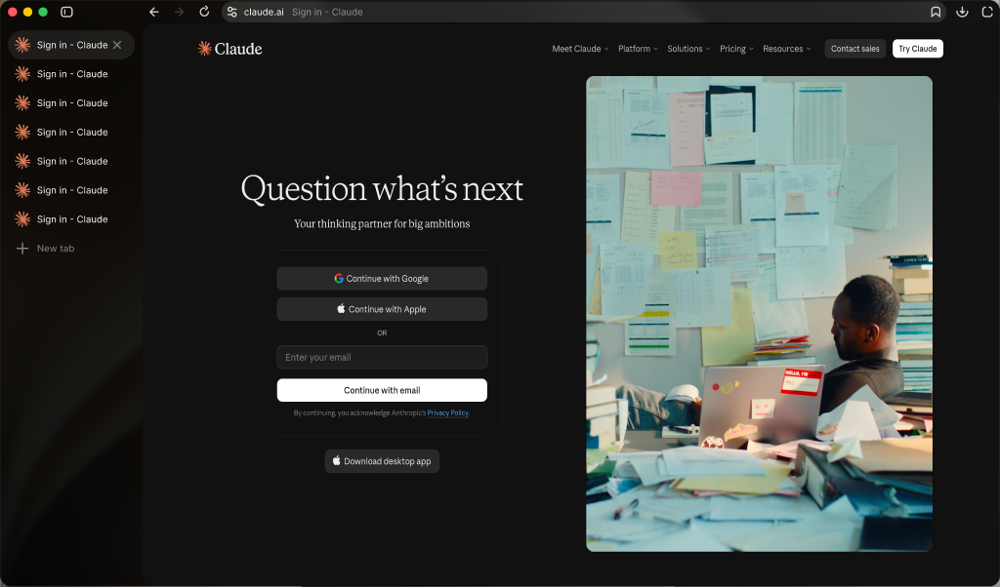
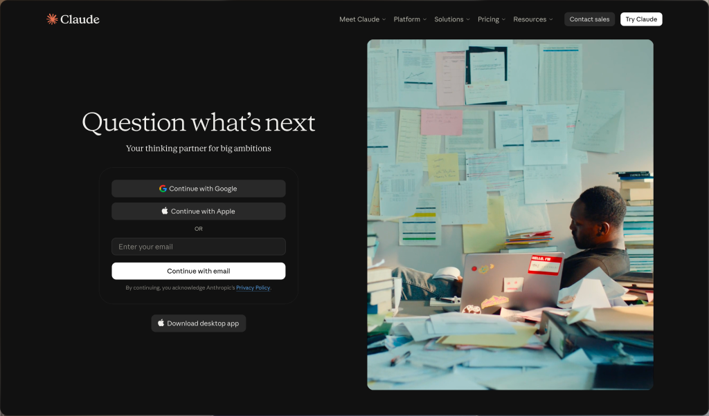
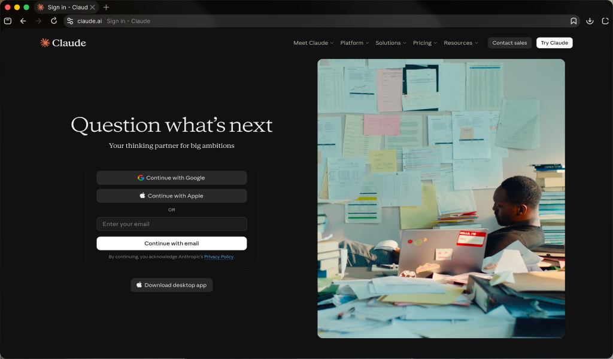
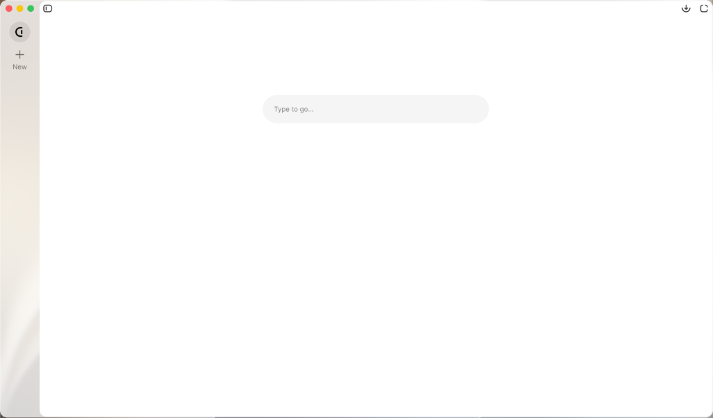
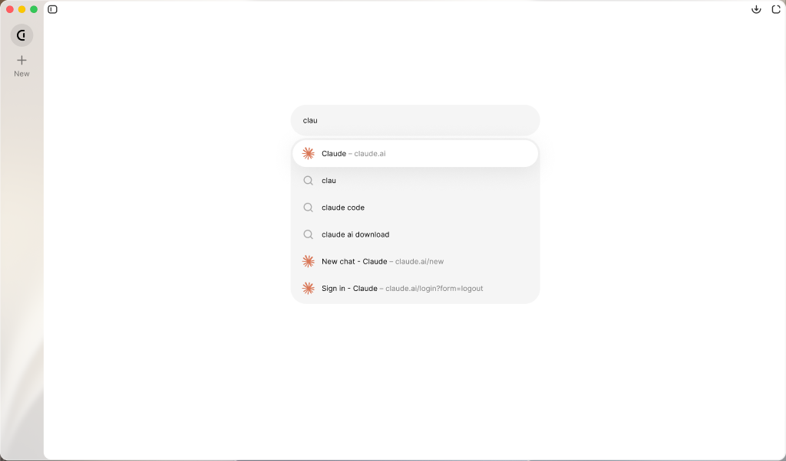
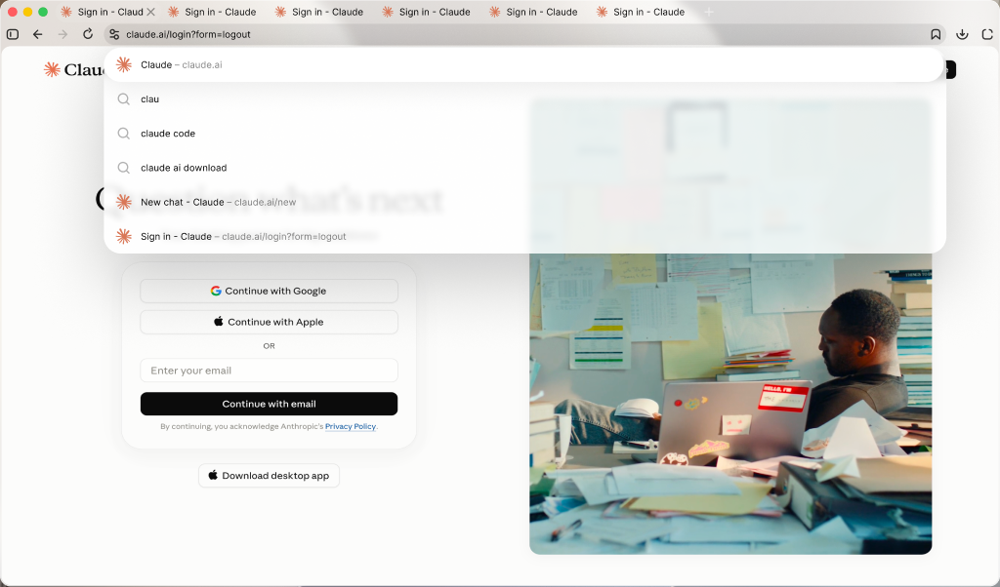

The page gets
the whole window.
Use is a minimal browser for macOS. Tabs, the address bar and everything else stay out of the way until you need them.
Apple Silicon · macOS 15.4 or later · Free


Three layouts, one button.
Expanded sidebar, compact sidebar, hidden. Or put the tabs on top. When the chrome is hidden, move to the left or top edge and it slides in over the page.



Spaces.
Separate sets of tabs in one window. Swipe the sidebar sideways to switch, and swipe past the last one to start a new space and name it.

Chrome extensions.
Open an extension's page in the Chrome Web Store and install it with the corner button at the top right. The same panel lists every extension and what it is doing on the current site.

Quiet, and complete.
A built-in ad blocker, bookmarks with folders, downloads, find in page and history. Import from Safari, Chrome, Arc and others. Settings live in the menu bar, not in the window.

-
1
Open the downloaded Use.dmg.
-
2
Drag Use to Applications.
-
3
On first launch macOS says it cannot verify the app, because the build is not notarized yet. Open System Settings ▸ Privacy & Security and press Open Anyway.
Updates are built in afterwards: Use ▸ Check for Updates.